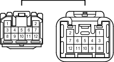

Connector No.
CA1
Connector Part No.
90980-11531/90980-11530
Connector Color
Milky White / Milky White
Repair W/H
090Ⅱ-12

System Circuits
Charging
Ignition (2AZ-FE)
Ignition (2GR-FE)
Engine Control & CVT & Shift Indicator (2AZ-FE)
Engine Control & ECT & Shift Indicator & Radar Cruise Control (2GR-FE)
Pre-crash Safety System
Combination Meter
Audio & Navigation & Back Guide Monitor (~'09.12)
Audio & Navigation & Back Guide Monitor ('09.12~)
Back-up Light